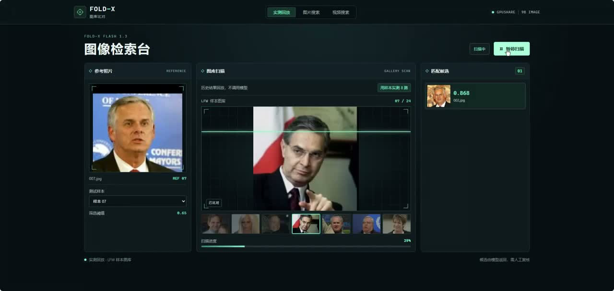
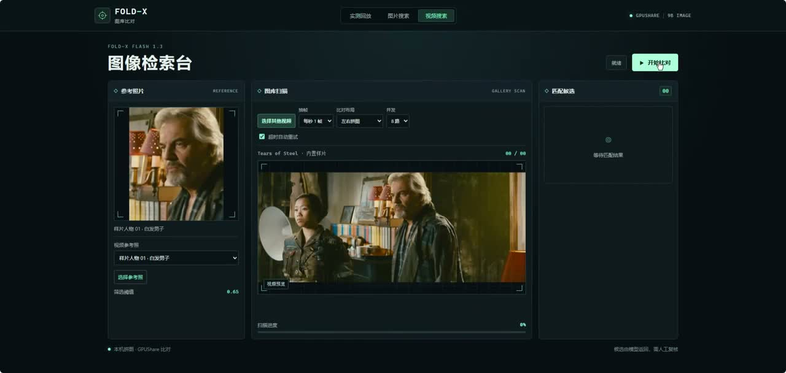

CASE 06 / Using an image to guide recognition and judgment
Show what you mean. Find related scenes.
A reference image provides the visual target. The application compares it with an image collection or video frames, then displays candidates, scores, and video timestamps for review.
Words are no longer the only way to express the target. The next step is to interpret a reference image and judge how other scenes relate to it.
Where this can help · Relevant to finding visual assets, screening image libraries, and locating candidate video segments.
What the recording shows
- The image section replays historical results. The video scan ends at 143 of 735 frames, about 19% complete, with 23 candidates displayed.
- Candidates still require review. Match accuracy has not been independently evaluated.
This is a demonstration of a partial scan, not evidence of full-search duration, accuracy, or an advantage over other models.
Reading the speed claims · At one point, the interface reports 6.7 frames per second. This is a momentary reading, not average throughput over the full run or per-decision model latency.
Key frames



